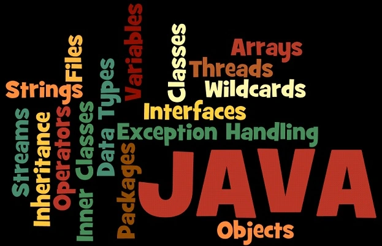

Adobe Photoshop is a raster graphics editor developed and published by Adobe Systems for macOS and Windows.
Photoshop was created in 1988 by Thomas and John Knoll. Since then, it has become the de facto industry
standard in raster graphics editing, such that the word "photoshop" has become a verb as in "to Photoshop an image,"
"photoshopping" and "photoshop contest", though Adobe discourages such use.
CorelDraw is a vector graphics editor developed and marketed by Corel Corporation.
It is also the name of Corel's Graphics Suite, which bundles CorelDraw with bitmap-image
editor Corel Photo-Paint as well as other graphics-related programs. The latest version
is designated X8 (equivalent to version 18), and was released in March 2016. CorelDraw is
designed to edit two-dimensional images such as logos and posters.
Adobe Illustrator was first developed for the Apple Macintosh in December 1986
(shipping in January 1987) as a commercialization of Adobe's in-house font development software
and PostScript file format. Adobe Illustrator is the companion product of Adobe Photoshop. Photoshop
is primarily geared toward digital photo manipulation and photorealistic styles of computer illustration.

HTML stands for Hyper Text Markup Language and was developed by Berners-Lee in 1991. HTML is used to create
static web pages or a website. HTML is a Markup language means that everything should be written inside the tags.
HTML tags are the keywords surrounded by the angle brackets. HTML is not a case sensitive language and can be written
in any text editor, like Notepad, Notepad++, Dreamweaver etc.
CSS stands for Cascading Style Sheets. It describes how HTML elements appear on the screen.
CSS provides an easy and effective way to specify various attributes for the HTML tags. Using CSS, you can specify
a number of style properties for a given HTML element.
JavaScript is a scripting language commonly used in web development. It was developed by Netscape to build
dynamic and interactive websites. JavaScript is a client-side scripting language, which means the source code is
processed on the client's web browser rather than on the web server. JavaScript is used to program the behavior of web pages.